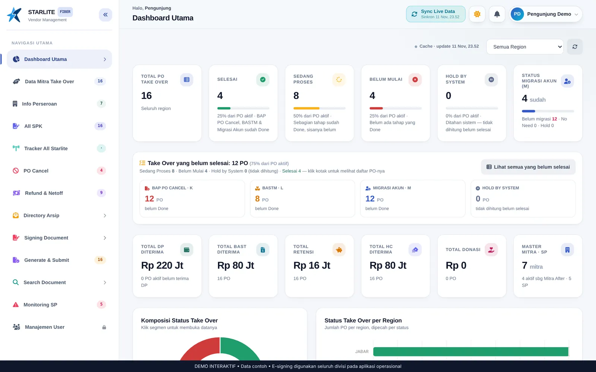

Aplikasi operasional · dipakai seluruh divisi
STARLITE
Vendor Management & E-signing
Aplikasi terintegrasi untuk seleksi mitra baru, database mitra, monitoring, dokumen, signing fingerprint/Face ID, dan email otomatis.
7+ → 1–2hari hingga full sign lintas divisi
10 → 1–2menit untuk menyusun email
Rp0biaya lisensi e‑signing internal
